@CBSNews
📝 原文: These are the best airlines in 2026, according to The Points Guy.
🇨🇳 译文: 根据 The Points Guy 的说法，这些是 2026 年最佳航空公司。

🕒 2026-06-03T18:44:20+00:00
| 来源 | 旧窗口内数量 | 本次新增 | 本次淘汰 | 当前窗口内共有 |
|---|---|---|---|---|
| 推文 + Dawn 新闻 | 0 | 42 | 0 | 42 |
| ARY News | 0 | 0 | 0 | 0 |
注：淘汰数 = 旧窗口内数量 + 本次新增 - 当前窗口内共有

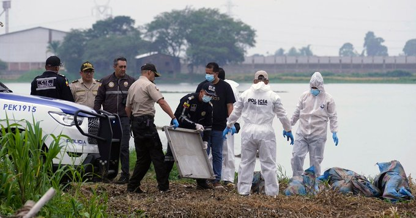
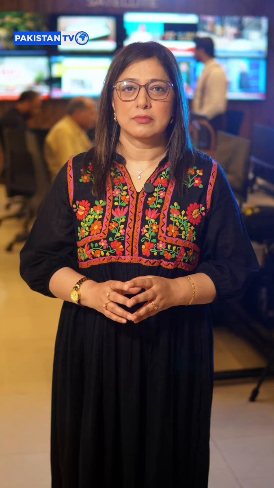
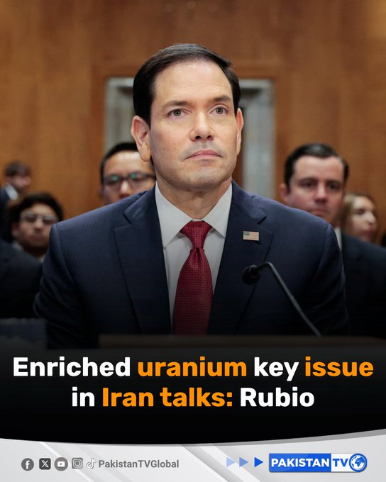
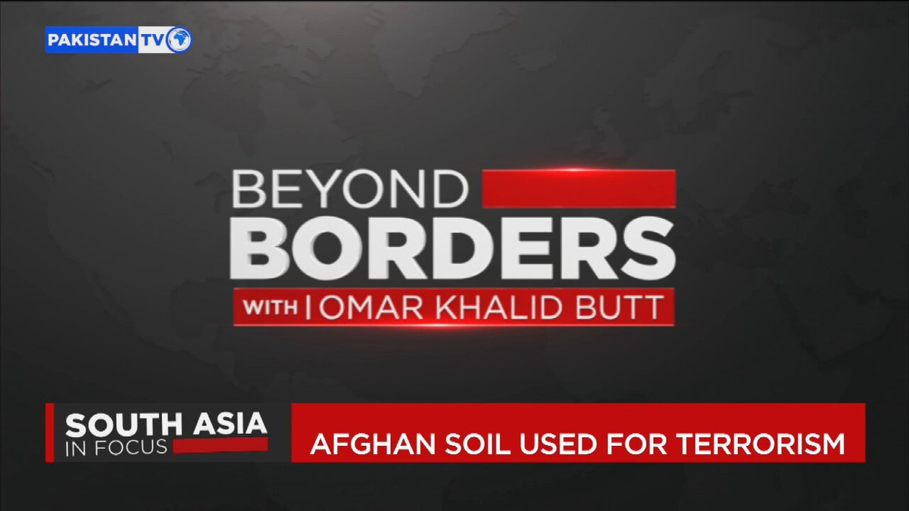

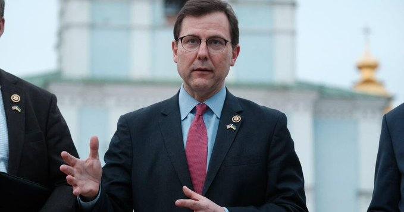
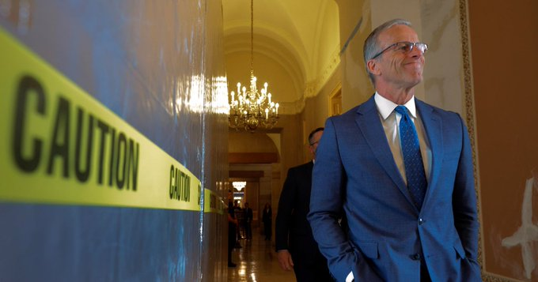
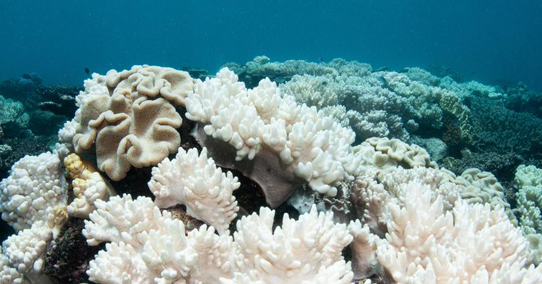


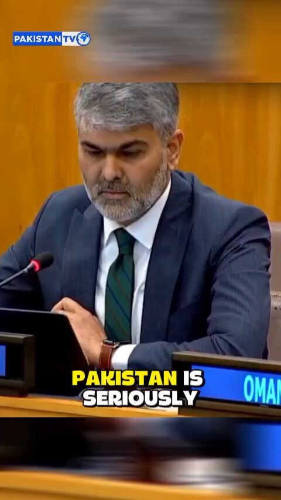

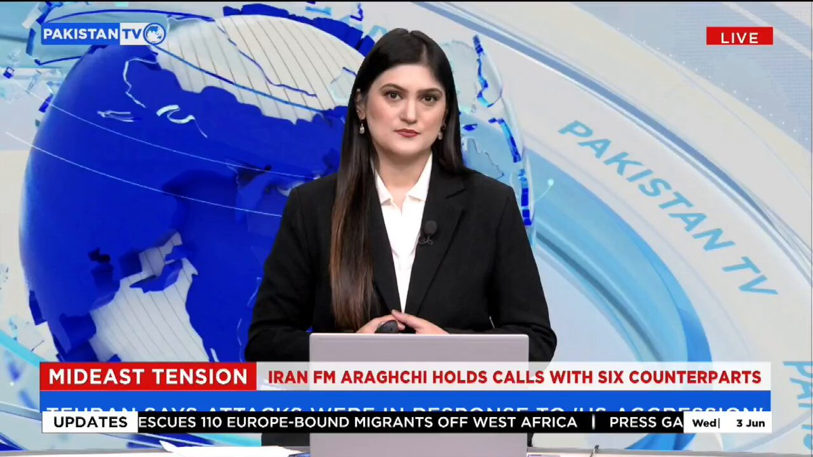
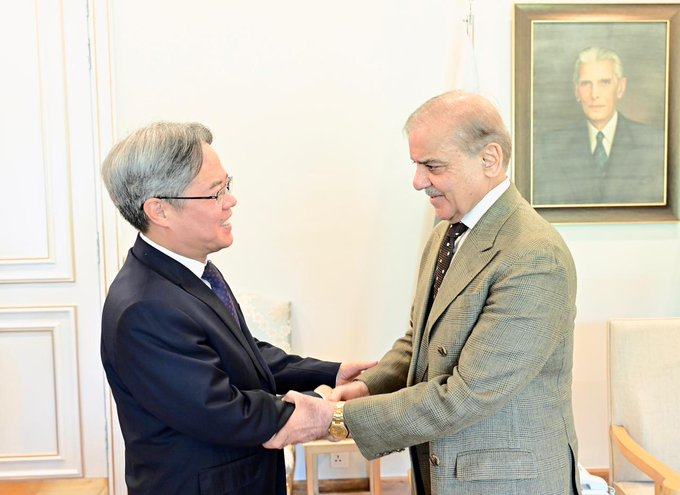
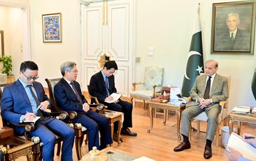
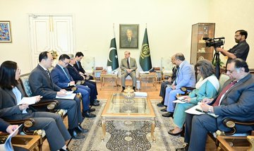
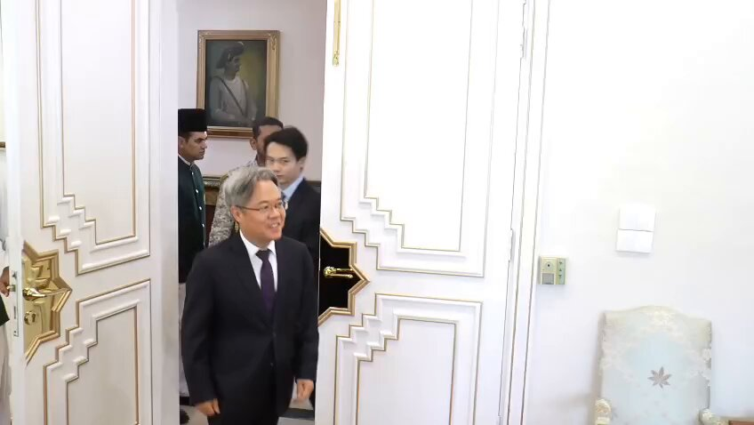
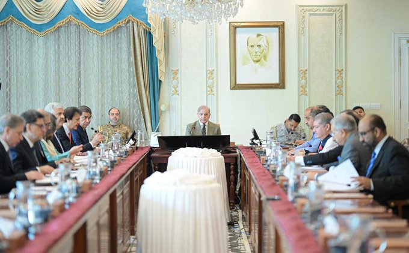
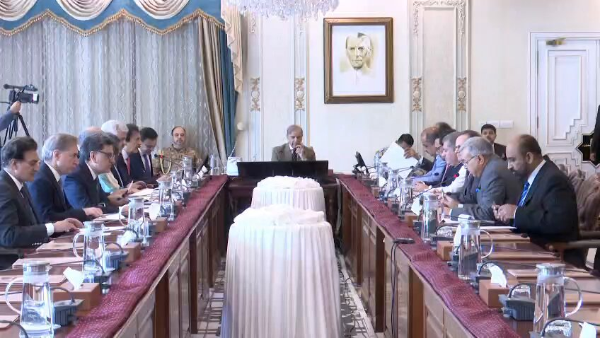
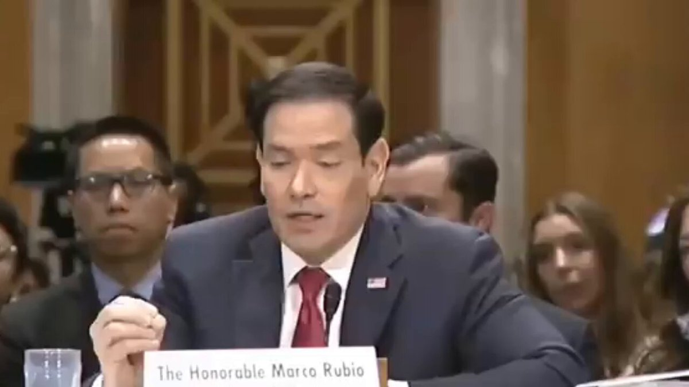

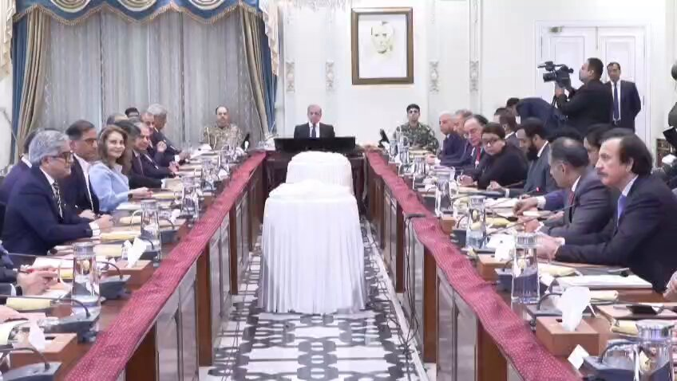
暂无文章。